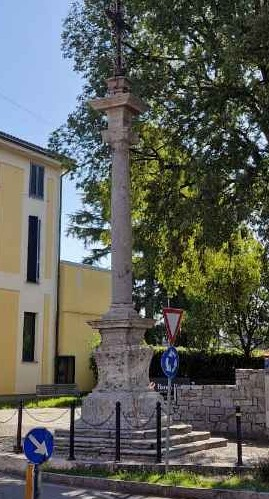

Renate — un paese da leggere controluce

La colonna del Crocione, Renate. Fotografia dell'autore.
Ci sono paesi che sembrano non avere storia. Renate è uno di questi — agli occhi di chi passa, è un comune qualunque della Brianza industriale, con le sue rotatorie, i capannoni, le villette a schiera. Eppure basta fermarsi un momento, guardare in controluce, e sotto la superficie del presente si intravede una stratificazione sorprendente.
Il nome stesso è un documento. "Renate" deriva quasi certamente da "Arenate" — riferimento alla natura sabbiosa e morenica del terreno, quella ghiaia glaciale che le colline brianzole portano ancora in superficie. È una memoria geologica dell'ultima glaciazione. Il suolo di Renate è già, in questo senso, un archivio: racconta il passaggio dei ghiacciai molto prima di raccontare quello degli uomini.
Ma gli uomini arrivano presto. In località Odosa, durante gli scavi ottocenteschi per la ferrovia Monza-Molteno-Oggiono — storica linea lombarda denominata "Besanino" (identificata come linea S7) — vennero alla luce sepolture di epoca romana. Tombe che testimoniano una presenza stabile in questo angolo di Brianza già nei secoli dell'Impero. Quei reperti furono donati ai Musei di Lecco, dove probabilmente riposano ancora, in qualche cassetto di deposito che nessuno apre da decenni. Quella stessa linea, inaugurata nel 1911, porta la firma di un altro figlio di Renate: l'ingegner Enea Camisasca, renatese di nascita, ne fu il progettista — un nome che il paese ricorda ancora oggi in una via del centro. In località Cariggi fu rinvenuta una spada in bronzo del tipo cosiddetto "a foglia di salice", che verosimilmente segnava la sepoltura di un guerriero. Romana, non longobarda come vuole una voce di paese che circola ancora oggi — ma non per questo meno significativa: un guerriero romano è morto a Renate, e qualcuno lo ha sepolto con la sua arma.
Poi arrivano i secoli che la memoria popolare tende a saltare, come se tra la caduta di Roma e il Comune di Milano non fosse successo nulla. È invece esattamente in quei secoli che il territorio brianzolo assume la fisionomia che ancora oggi, in filigrana, si legge nel paesaggio: le popolazioni longobarde si insediano stabilmente, i nomi dei luoghi si germanizzano, la maglia dei villaggi si consolida.
Il primo documento che cita esplicitamente Renate è del 1096: una pergamena in cui un certo Maino del fu Borrizzone, "di Vicosopra", lascia i suoi beni alla chiesa di San Lorenzo di Chiavenna. L'atto è redatto da Giovanni, notaio e giudice "in Renate" — segno che il paese era già abbastanza strutturato da avere un notaio, figura che presuppone un tessuto sociale e commerciale non banale.
Pochi anni dopo, nel 1100, un Lanfranco "de vico Arenato" compare in un altro atto testamentario. Appartiene alla famiglia Della Torre, quella che governerà Milano prima dei Visconti. Non è un personaggio secondario: è un filo che collega un piccolo paese collinare ai grandi giochi di potere della Lombardia medievale.
Ma il luogo che più di tutti porta la storia di Renate incisa nella pietra è la Chiesuola del Vianò, dedicata ai Santi Alessandro e Mauro. È una chiesa del XII secolo — romanica, sobria, più volte rimaneggiata nel corso dei secoli, con quella qualità del silenzio che solo certe costruzioni medievali sanno custodire. Al suo interno sono conservate le reliquie di San Mauro, monaco benedettino che, secondo la tradizione, si fermò a Renate durante il suo viaggio verso la Francia.
Anche la chiesa parrocchiale dei Santi Donato e Carpoforo, quella dove nel 1843 si sposò il figlio di Alessandro Manzoni, porta i segni di questa stratificazione continua. Attestata già nel Cinquecento, fu ricostruita nel 1684 e restaurata nel Settecento; ma il suo volto attuale, quello che i renatesi conoscono, nasce soprattutto dal grande ampliamento voluto tra il 1960 e il 1964 dal parroco don Pasquale Zanzi — l'ultimo, vero rifacimento di un edificio che nel frattempo aveva già cambiato faccia più volte.
Nella piazza antistante, nella cosiddetta piazzetta del Crocione, si trova un'altra memoria che il paese porta cucita addosso: una colonna in pietra ottocentesca, sormontata da una croce dorata — così importante da essere finita nello stemma comunale, sotto forma di obelisco stilizzato. La tradizione locale, riportata anche nella storia ufficiale del Comune, vuole che sia stata eretta a ricordo dell'esecuzione di un giovane patriota risorgimentale, di cui non si conosce il nome, amico di Enrico Manzoni — che a Renate visse per vent'anni, dal 1843 al 1863, nella villa Cagnola-Mazzucchelli. Chi fosse esattamente quel giovane, e come si svolsero i fatti, restano domande senza risposta: nessuna fonte storica reperibile ne conferma i dettagli. Resta però un indizio prezioso — l'amicizia con Enrico Manzoni — che forse, un giorno, permetterà finalmente di dargli un nome.
Umberto Sironi, storico locale e compaesano, ha dedicato a Renate due volumi fondamentali: "Renate attraverso i secoli" e "Memorie sulla Chiesa dei Santi Alessandro e Mauro al Vianò di Renate". Libri che circolano solo tra chi sa cercarli — esattamente il tipo di fonte che merita di essere riportata alla luce.
Renate ha dato i natali a due figure che hanno segnato, in campi opposti, la storia italiana del secondo Novecento. Qui nacque nel 1919 Edoardo Mangiarotti, il "re di spade", il più medagliato schermidore olimpico della storia italiana. E qui, il 14 marzo 1934, nacque Dionigi Tettamanzi, futuro cardinale e arcivescovo di Milano, ricordato ancora oggi come il "quasi Papa" della Brianza. A pochi passi da Renate, a Briosco, crebbe invece Gherardo Colombo, uno dei magistrati simbolo dell'inchiesta Mani Pulite — un'altra traccia di quanto questo angolo di Brianza, apparentemente minore, abbia inciso ben oltre i propri confini.
C'è poi chi ha costruito la Renate del Novecento restando dentro i suoi confini. Alfredo Sassi, scultore milanese trasferitosi qui alla fine dell'Ottocento, non si limitò all'arte: da assessore comunale volle e ottenne il primo edificio scolastico del paese, e fondò una scuola serale di disegno sostenuta dal mecenatismo di un industriale locale — una forma precoce di sponsorizzazione culturale, quando ancora non si chiamava così. Fu proprio in quella scuola che si formarono generazioni di artigiani del paese, tra i quali mio nonno paterno, intagliatore ed ebanista. Alla tradizione pittorica locale appartengono anche Tino Pirovano e Bruna Pagani, entrambi apprezzati nella memoria artistica di Renate. E fu un altro renatese, Carlo Edoardo Valli — sindaco del paese dal 1985 al 1995 — a guidare per oltre un decennio l'Associazione Industriali e la Camera di Commercio di Monza e Brianza, portando a compimento l'intuizione del padre Pasquale nel concetto di "maniglia d'autore".
Renate porta ancora, cucita nel tessuto del paese, la sua storia industriale novecentesca. Nel secondo dopoguerra il paese era conosciuto in tutta la Brianza — e non solo — come il paese "de manigliàtt", grazie soprattutto alla Valli & Valli, fabbrica fondata nel 1934 da Pasquale Valli — inizialmente nota come Valli & Colombo, prima di assumere il nome con cui sarebbe diventata celebre nel mondo. Rilevata nel 2008 dal gruppo svedese Assa Abloy, l'azienda ha chiuso definitivamente lo stabilimento di via Concordia nel dicembre 2024, dopo novant'anni di attività — la produzione delle maniglie storiche, per una beffa che dice molto sui tempi che viviamo, è proseguita altrove, nel Regno Unito. Ma sotto l'asfalto delle strade provinciali c'è ancora la ghiaia morenica. E in quella ghiaia, ogni tanto, emerge qualcosa: una spada, una moneta, il frammento di una sepoltura. La storia non va da nessuna parte. Aspetta solo che qualcuno smetta di avere fretta.